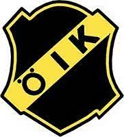

Örserums IK

Placering förra året:
5:a, Division 5
Ditt namn och roll i laget:
Emil Daag, tränare
Vad har ni för målsättning inför säsongen?
Vi har inte pratat om målsättning ännu inom laget, brukar göras på lägret i april.
Men kriga i toppen ska vi absolut göra.
Hur ser spelartruppen ut? Nyförvärv/Förluster?
Vi har en som är ute och reser och missar hela säsongen.
På inåtfronten så har vi 2-3 spelare som testar med oss nu.
Sen har vår kapten många säsonger kommit tillbaka efter år av husbygge och barn.
Vem i laget kommer att spela en stor roll denna säsong och varför?
Jag tror att Axel Vadsten kommer att spela en stor roll för oss, han växte under förra
säsongen och är användbar på många positioner på plan. En smart och slitstark spelare som har
ledaregenskaper och har bra blick.
Vilket lag ser ni fram emot att möta denna säsong och varför?
Alla lag och matcher har sin charm på denna nivån tycker jag.
Men Solberga och Sommen som vi torskade båda mötena emot ifjol ska bli intressanta att möta.
Vilka tror ni kommer att vinna serien?
Svårt att säga. Tror vi har bra chans att utmana utan att ha jättekoll på de andra lagen.
Senaste resultat:
 vs. Adelövs IK 5 - 0
vs. Adelövs IK 5 - 0
Annebergs GIF vs.  2 - 1
2 - 1